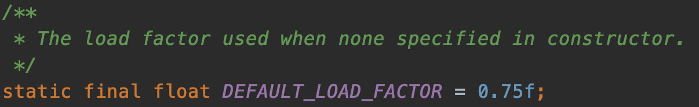

原文连接:https://www.cnblogs.com/aobing/p/12014271.html
你知道的越多，你不知道的越多
点赞再看，养成习惯
本文 GitHub https://github.com/JavaFamily 上已经收录，有一线大厂面试点思维导图，也整理了很多我的文档，欢迎Star和完善，大家面试可以参照考点复习，希望我们一起有点东西。
前言
作为一个在互联网公司面一次拿一次Offer的面霸，打败了无数竞争对手，每次都只能看到无数落寞的身影失望的离开，略感愧疚（请允许我使用一下夸张的修辞手法）。
于是在一个寂寞难耐的夜晚，我痛定思痛，决定开始写互联网技术栈面试相关的文章，希望能帮助各位读者以后面试势如破竹，对面试官进行360°的反击，吊打问你的面试官，让一同面试的同僚瞠目结舌，疯狂收割大厂Offer！
所有文章的名字只是我的噱头，我们应该有一颗谦逊的心，所以希望大家怀着空杯心态好好学，一起进步。
正文
一个婀娜多姿，穿着衬衣的小姐姐，拿着一个精致的小笔记本，径直走过来坐在我的面前。
看着眼前这个美丽的女人，心想这不会就是Java基础系列的面试官吧，真香。
不过看样子这么年轻应该问不出什么深度的吧，嘻嘻。（哦？是么😏）
小伙子，听前面的面试官说了，你Redis和消息队列都回答得不错，看来还是有点东西。
美丽迷人的面试官您好，您见笑了，全靠看了敖丙的《吊打面试官》系列，不然我还真的回答不上很多原本的知识盲区，他真的有点东西。
面试官心想：哦，吊打面试官是么，那今天我就让你知道，吊打这两个字怎么写的吧，年轻人啊，提前为你感到惋惜。
嗯嗯小帅比，虽然前面的技术栈没啥太大的瑕疵，不过未来很长的一段时间我会用一期期的基础教你做人的，你要准备好哟！
好了我们开始今天的面试吧，小伙子你了解数据结构中的HashMap么？能跟我聊聊他的结构和底层原理么？
切，这也太看不起我了吧，居然问这种低级问题，不过还是要好好回答。
嗯嗯面试官，我知道HashMap是我们非常常用的数据结构，由数组和链表组合构成的数据结构。
大概如下，数组里面每个地方都存了Key-Value这样的实例，在Java7叫Entry在Java8中叫Node。
因为他本身所有的位置都为null，在put插入的时候会根据key的hash去计算一个index值。
就比如我put（”帅丙“，520），我插入了为”帅丙“的元素，这个时候我们会通过哈希函数计算出插入的位置，计算出来index是2那结果如下。
hash（“帅丙”）= 2
你提到了还有链表，为啥需要链表，链表又是怎么样子的呢？
我们都知道数组长度是有限的，在有限的长度里面我们使用哈希，哈希本身就存在概率性，就是”帅丙“和”丙帅“我们都去hash有一定的概率会一样，就像上面的情况我再次哈希”丙帅“极端情况也会hash到一个值上，那就形成了链表。
每一个节点都会保存自身的hash、key、value、以及下个节点，我看看Node的源码。
说到链表我想问一下，你知道新的Entry节点在插入链表的时候，是怎么插入的么？
java8之前是头插法，就是说新来的值会取代原有的值，原有的值就顺推到链表中去，就像上面的例子一样，因为写这个代码的作者认为后来的值被查找的可能性更大一点，提升查找的效率。
但是，在java8之后，都是所用尾部插入了。
为啥改为尾部插入呢？
这！！！这个问题，面试官可真会问！！！还好我饱读诗书，不然死定了！
有人认为是作者随性而为，没啥luan用，其实不然，其中暗藏玄机
首先我们看下HashMap的扩容机制：
帅丙提到过了，数组容量是有限的，数据多次插入的，到达一定的数量就会进行扩容，也就是resize。
什么时候resize呢？
有两个因素：
- Capacity：HashMap当前长度。
- LoadFactor：负载因子，默认值0.75f。

怎么理解呢，就比如当前的容量大小为100，当你存进第76个的时候，判断发现需要进行resize了，那就进行扩容，但是HashMap的扩容也不是简单的扩大点容量这么简单的。
扩容？它是怎么扩容的呢？
分为两步
- 扩容：创建一个新的Entry空数组，长度是原数组的2倍。
- ReHash：遍历原Entry数组，把所有的Entry重新Hash到新数组。
为什么要重新Hash呢，直接复制过去不香么？
卧槽这个问题！有点知识盲区呀！
1x1得 1 1x2 得 2 …. 有了，我想起来敖丙那天晚上在我耳边的话了：假如我年少有为不自卑，懂得什么是珍贵，那些美梦没给你，我一生有愧….什么鬼！
小姐姐：是因为长度扩大以后，Hash的规则也随之改变。
Hash的公式---> index = HashCode（Key） & （Length - 1）
原来长度（Length）是8你位运算出来的值是2 ，新的长度是16你位运算出来的值明显不一样了。
扩容前：
扩容后：
说完扩容机制我们言归正传，为啥之前用头插法，java8之后改成尾插了呢？
卧槽，我以为她忘记了！居然还是被问到了！
我先举个例子吧，我们现在往一个容量大小为2的put两个值，负载因子是0.75是不是我们在put第二个的时候就会进行resize？
2*0.75 = 1 所以插入第二个就要resize了
现在我们要在容量为2的容器里面用不同线程插入A，B，C，假如我们在resize之前打个短点，那意味着数据都插入了但是还没resize那扩容前可能是这样的。
我们可以看到链表的指向A->B->C
Tip：A的下一个指针是指向B的
因为resize的赋值方式，也就是使用了单链表的头插入方式，同一位置上新元素总会被放在链表的头部位置，在旧数组中同一条Entry链上的元素，通过重新计算索引位置后，有可能被放到了新数组的不同位置上。
就可能出现下面的情况，大家发现问题没有？
B的下一个指针指向了A
一旦几个线程都调整完成，就可能出现环形链表
如果这个时候去取值，悲剧就出现了——Infinite Loop。
诶卧槽，小伙子难不倒他呀！
小伙子有点东西呀，但是你都都说了头插是JDK1.7的那1.8的尾插是怎么样的呢？
因为java8之后链表有红黑树的部分，大家可以看到代码已经多了很多if else的逻辑判断了，红黑树的引入巧妙的将原本O(n)的时间复杂度降低到了O(logn)。
Tip：红黑树的知识点同样很重要，还是那句话不打没把握的仗，限于篇幅原因，我就不在这里过多描述了，以后写到数据结构再说吧，不过要面试的仔，还是要准备好，反正我是经常问到的。
使用头插会改变链表的上的顺序，但是如果使用尾插，在扩容时会保持链表元素原本的顺序，就不会出现链表成环的问题了。
就是说原本是A->B，在扩容后那个链表还是A->B

Java7在多线程操作HashMap时可能引起死循环，原因是扩容转移后前后链表顺序倒置，在转移过程中修改了原来链表中节点的引用关系。
Java8在同样的前提下并不会引起死循环，原因是扩容转移后前后链表顺序不变，保持之前节点的引用关系。
那是不是意味着Java8就可以把HashMap用在多线程中呢？
我认为即使不会出现死循环，但是通过源码看到put/get方法都没有加同步锁，多线程情况最容易出现的就是：无法保证上一秒put的值，下一秒get的时候还是原值，所以线程安全还是无法保证。
小伙子回答得很好嘛，这都被你回答道了，面试这么多人都不知道头插和尾插，还是被你说出来了，可以可以。
面试官谬赞啊，要不是你这样美若天仙的面试官面试我，我估计是想不起来了。
我*，你套近乎？
小姐姐抿嘴一笑，小子你offer有了，耶稣都带不走你，我说的！
那我问你HashMap的默认初始化长度是多少？
我记得我在看源码的时候初始化大小是16
你那知道为啥是16么？
卧*，这叫什么问题啊？他为啥是16我怎么知道？？？你确定你没逗我？
我努力回忆源码，不知道有没有漏掉什么细节，以前在学校熬夜看源码的一幕幕在脑海里闪过，想起那个晚上在操场上，跟我好了半个月的小绿拉着我的手说：你就要当爸爸了。
等等，这都是什么鬼，哦哦哦，想起来了！！！
在JDK1.8的 236 行有1<<4就是16，为啥用位运算呢？直接写16不好么？
我再次陷入沉思，疯狂脑暴，叮！
有了！
面试官您好，我们在创建HashMap的时候，阿里巴巴规范插件会提醒我们最好赋初值，而且最好是2的幂。
这样是为了位运算的方便，位与运算比算数计算的效率高了很多，之所以选择16，是为了服务将Key映射到index的算法。
我前面说了所有的key我们都会拿到他的hash，但是我们怎么尽可能的得到一个均匀分布的hash呢？
是的我们通过Key的HashCode值去做位运算。
我打个比方，key为”帅丙“的十进制为766132那二进制就是 10111011000010110100
我们再看下index的计算公式：index = HashCode（Key） & （Length- 1）
15的的二进制是1111，那10111011000010110100 &1111 十进制就是4
之所以用位与运算效果与取模一样，性能也提高了不少！
那为啥用16不用别的呢？
因为在使用不是2的幂的数字的时候，Length-1的值是所有二进制位全为1，这种情况下，index的结果等同于HashCode后几位的值。
只要输入的HashCode本身分布均匀，Hash算法的结果就是均匀的。
这是为了实现均匀分布。
哟小家伙，知道的确实很多，那我问你个问题，为啥我们重写equals方法的时候需要重写hashCode方法呢？
你能用HashMap给我举个例子么？
这都能被他问到，还好我看了敖丙的系列呀，不然真的完了！！！
但是我想拖延点时间，只能故做沉思，仰望天空片刻，45°仰望天空的样子，说实话，我看到面试官都流口水了！可惜我是他永远得不到的男人，好了不装逼了。
我想起来了面试官！
因为在java中，所有的对象都是继承于Object类。Ojbect类中有两个方法equals、hashCode，这两个方法都是用来比较两个对象是否相等的。
在未重写equals方法我们是继承了object的equals方法，那里的 equals是比较两个对象的内存地址，显然我们new了2个对象内存地址肯定不一样
- 对于值对象，==比较的是两个对象的值
- 对于引用对象，比较的是两个对象的地址
大家是否还记得我说的HashMap是通过key的hashCode去寻找index的，那index一样就形成链表了，也就是说”帅丙“和”丙帅“的index都可能是2，在一个链表上的。
我们去get的时候，他就是根据key去hash然后计算出index，找到了2，那我怎么找到具体的”帅丙“还是”丙帅“呢？
equals！是的，所以如果我们对equals方法进行了重写，建议一定要对hashCode方法重写，以保证相同的对象返回相同的hash值，不同的对象返回不同的hash值。
不然一个链表的对象，你哪里知道你要找的是哪个，到时候发现hashCode都一样，这不是完犊子嘛。
可以可以小伙子，我记得你上面说过他是线程不安全的，那你能跟我聊聊你们是怎么处理HashMap在线程安全的场景么？
面试官，在这样的场景，我们一般都会使用HashTable或者ConcurrentHashMap，但是因为前者的并发度的原因基本上没啥使用场景了，所以存在线程不安全的场景我们都使用的是ConcurrentHashMap。
HashTable我看过他的源码，很简单粗暴，直接在方法上锁，并发度很低，最多同时允许一个线程访问，ConcurrentHashMap就好很多了，1.7和1.8有较大的不同，不过并发度都比前者好太多了。
那你能跟我聊聊ConcurrentHashMap么？
好呀，不过今天天色已晚，我觉得我们要不改天再约？
再说最近敖丙好像双十二比较忙，一次怎么能怼这么多呢？
好吧好吧，小伙子还挺会为别人着想，而且还喜欢这么优秀的作者，你我觉得来日可期，那我们改日再约，今天表现很好，希望下次能保持住！
总结
HashMap绝对是最常问的集合之一，基本上所有点都要烂熟于心的那种，篇幅和时间的关系，我就不多介绍了，核心的点我基本上都讲到了，不过像红黑树这样的就没怎么聊了，但是不代表不重要。
篇幅和精力的原因我就介绍到了一部分的主要知识点，我总结了一些关于HashMap常见的面试题，大家问下自己能不能回答上来，不能的话要去查清楚哟。
HashMap常见面试题：
HashMap的底层数据结构？
HashMap的存取原理？
Java7和Java8的区别？
为啥会线程不安全？
有什么线程安全的类代替么?
默认初始化大小是多少？为啥是这么多？为啥大小都是2的幂？
HashMap的扩容方式？负载因子是多少？为什是这么多？
HashMap的主要参数都有哪些？
HashMap是怎么处理hash碰撞的？
hash的计算规则？
点关注，不迷路
好了各位，以上就是这篇文章的全部内容了，能看到这里的人呀，都是人才。
我后面会每周都更新几篇一线互联网大厂面试和常用技术栈相关的文章，非常感谢人才们能看到这里，如果这个文章写得还不错，觉得「敖丙」我有点东西的话 求点赞👍 求关注❤️ 求分享👥 对暖男我来说真的 非常有用！！！
白嫖不好，创作不易，各位的支持和认可，就是我创作的最大动力，我们下篇文章见！
敖丙 | 文 【原创】
如果本篇博客有任何错误，请批评指教，不胜感激 ！
文章每周持续更新，可以微信搜索「 三太子敖丙 」第一时间阅读和催更（比博客早一到两篇哟），本文 GitHub https://github.com/JavaFamily 已经收录，有一线大厂面试点思维导图，也整理了很多我的文档，欢迎Star和完善，大家面试可以参照考点复习，希望我们一起有点东西。